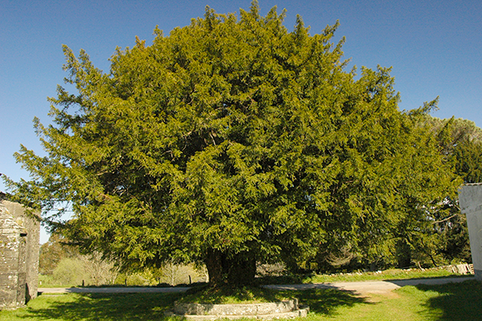
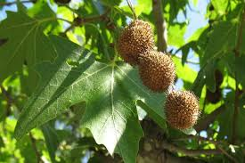
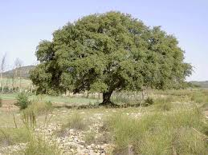
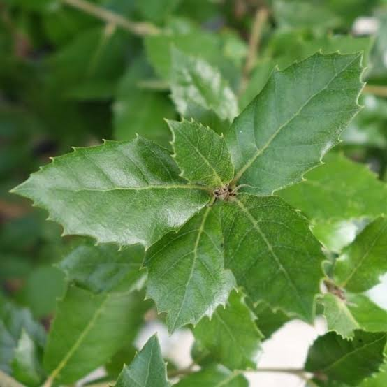
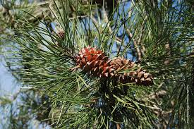
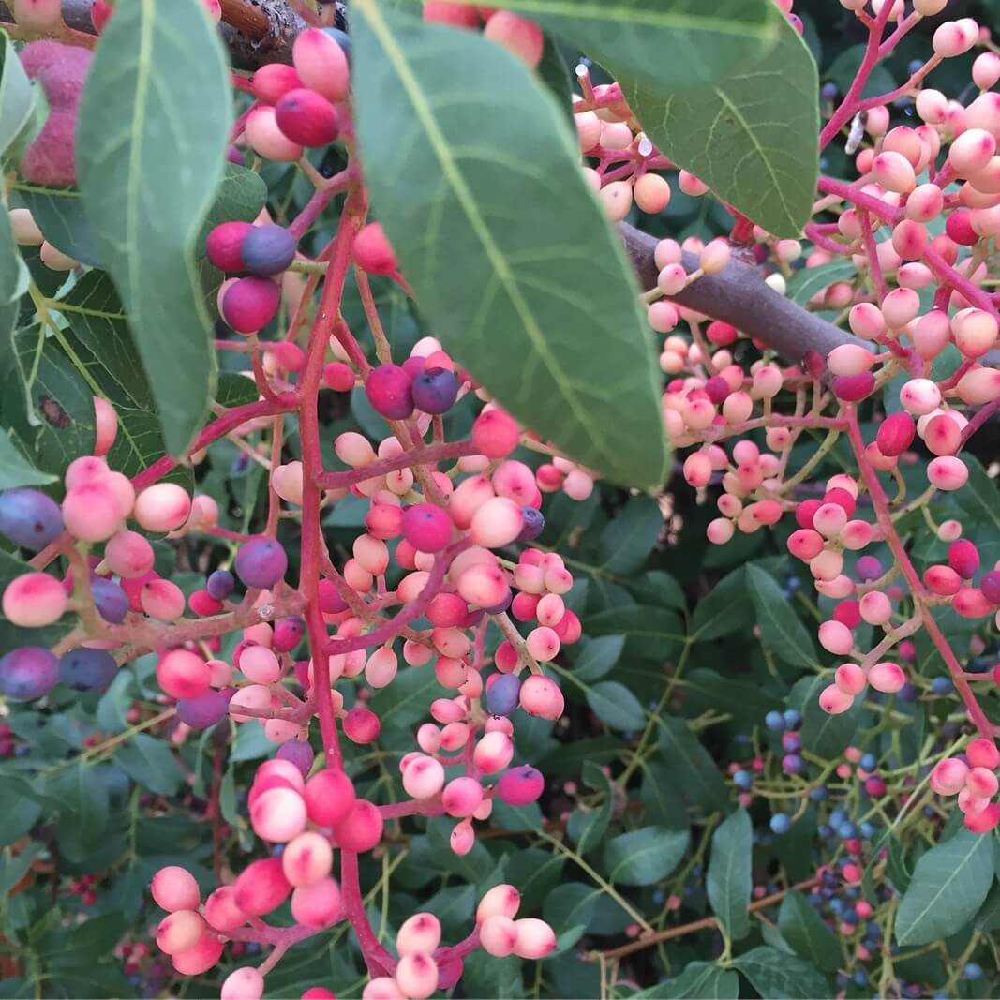

log in
sign up
user profile
log in
sign up
user profile
log in
sign up
user profile
log in
sign up
user profile
Nombre comun: Tejos
Nombre cientifico: Taxus Baccata
Clima: Húmedo y fresco, característico de zonas montañosas.
Region de origen: Asia Occidental
Tiempo en crecer: 100 y 200 años
Beneficios: El tejo tiene propiedades medicinales. El Taxol, un compuesto extraído del tejo, se utiliza en la quimioterapia para tratar ciertos tipos de cáncer.
Nombre comun: Platanos orientales
Nombre cientifico: Platanus orientalis
Clima: Mediterráneo húmedo o subtropical. Requieren suelos profundos y húmedos, con acceso a fuentes de agua, como ríos o arroyos.
Region de origen: Asia Occidental
Tiempo en crecer: 20 a 40 años
Beneficios: Los plátanos orientales son grandes árboles que ofrecen una excelente sombra
Nombre comun: Robles valencianos
Nombre cientifico: Quercus faginea (quejigo)
Clima: Mediterráneo con cierta influencia continental. Resisten inviernos fríos y veranos secos
Region de origen: Valencia
Tiempo en crecer: 50 a 100 años
Beneficios: Los robles son conocidos por su madera densa y resistente, muy valorada en la fabricación de muebles, suelos y barriles para la maduración de vino.
Nombre comun: Encinas
Nombre cientifico: Quercus ilex
Clima: Mediterráneo. Muy adaptadas a la sequía.
Region de origen: Mediterráneo
Tiempo en crecer: 30 a 60 años
Beneficios: Sus bellotas son utilizadas como alimento por animales como jabalíes y cerdos, especialmente en la producción de jamón ibérico.
Nombre comun: Pinos negrales
Nombre cientifico: Pinus nigra
Clima: Mediterráneo de montaña o continental, con inviernos fríos y veranos secos.
Region de origen: Europa central y meridional
Tiempo en crecer: 30 a 60 años
Beneficios: Los pinos contribuyen a la reforestación, ayudan a estabilizar el suelo y proporcionan refugio para diversas especies de fauna.
Nombre comun: Atocha
Nombre cientifico: Stipa tenacissima
Clima: Mediterráneo árido o semiárido.
Region de origen: Mediterráneo
Tiempo en crecer: 2 a 3 años
Beneficios: Las fibras de la atocha, también conocida como esparto, se han utilizado tradicionalmente para hacer cestas, alfombras, cuerdas y otros productos artesanales.
Nombre comun: Cornicabra
Nombre cientifico: Pistacia terebinthus
Clima: Mediterráneo seco,soporta inviernos suaves y veranos cálidos y secos.
Region de origen: Mediterráneo
Tiempo en crecer: 15 a 30 años
Beneficios: Los frutos de la cornicabra, llamados lentiscos, tienen aplicaciones medicinales tradicionales, aunque deben consumirse con precaución debido a su potencial toxicidad en grandes cantidades.